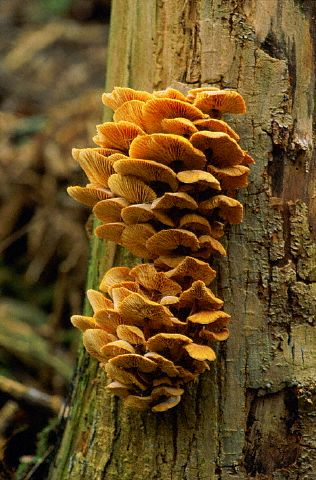

Simple and Bipartite Stochastic Block Models
An illustration on antagonistic tree/fungus network
2026-11-10
Source:vignettes/SBM_fungus_tree_network.qmd

1. Preliminaries
This vignette illustrates the use of the estimateSBM function and the methods accompanying the R6 classes SimpleSBMfit and BipartiteSBMfit.
1.1 Requirements
The packages required for the analysis are obviously sbm plus some others for data manipulation and representation:
To display the composition of the clusters, we use the following function, which gives a table with the names of the nodes of each cluster in a column:
clusterComposition <- function(memberships, nodeNames) {
clusters <- split(nodeNames, factor(memberships, levels = 1:max(memberships)))
maxSize <- max(lengths(clusters))
tab <- sapply(clusters, function(x) c(x, rep("", maxSize - length(x))))
colnames(tab) <- paste("Cluster", seq_along(clusters))
as.data.frame(tab)
}1.2 Data set: antagonistic tree/fungus interaction network
We consider the fungus-tree interaction network studied by Vacher et al. (2008), available with the package sbm:
data("fungusTreeNetwork")
str(fungusTreeNetwork, max.level = 1)
#> List of 5
#> $ tree_names : Factor w/ 51 levels "Abies alba","Abies grandis",..: 1 2 3 14 42 4 5 6 7 8 ...
#> $ fungus_names: Factor w/ 154 levels "Amphiporthe leiphaemia",..: 1 2 3 4 5 6 7 8 9 10 ...
#> $ tree_tree : num [1:51, 1:51] 0 12 9 3 2 2 0 0 2 7 ...
#> $ fungus_tree : int [1:154, 1:51] 0 0 0 0 1 1 1 0 0 0 ...
#> $ covar_tree :List of 3This data set provides information about 154 fungi sampled on 51 tree species. It is a list with the following entries:
-
fungus_names: list of the fungus species names -
tree_names: list of the tree species names -
fungus_tree: binary fungus-tree interactions -
tree_tree: weighted tree-tree interactions (number of common fungal species two tree species host) -
covar_tree: covariates associated to pairs of trees (namely genetic, taxonomic and geographic distances)
We first consider the tree-tree interactions resulting into a Simple Network. Then we consider the bipartite network between trees and fungi.
1.3 Mathematical Background
In all the models, each node belongs to a latent block , and the edges are independent given the blocks, with a distribution depending only on the blocks of the nodes they involve. The model fitted in each section is recalled before the fit. The parameters are estimated with a variational EM algorithm, and the number of blocks is selected with the Integrated Classification Likelihood (ICL). See Leger (2016) and Jean-Benoist Leger (2015) for details.
2. Analysis of the tree/tree data
2.1 Tree-tree binary interaction networks
We first consider the binary network where an edge is drawn between two trees when they do share a least one common fungi:
Some names are long. For trees, the species of the group are given in parentheses (for instance “Cultivated Poplars (Populus trichocarpa, P. canescens, P.alba, P.nigra and their cultivated hybrids)”). For fungi, some names give the grouped species in parentheses (for instance “Botrytis cinerea (grouped with Botryotinia fuckeliana (anamorphic type))”) or a variety or special form (for instance “Coleosporium tussilaginis f.sp. senecionis-silvatici”). To keep the plots and tables readable, we only keep the part before the parentheses, and the genus and species for fungi: the short names still identify each tree and each fungus.
treeNames <- trimws(sub("\\(.*", "", fungusTreeNetwork$tree_names))
fungusNames <- trimws(sub(" (var\\.|f\\.sp\\.) .*", "", sub("\\(.*", "", fungusTreeNetwork$fungus_names)))
tree_tree_binary <- 1 * (fungusTreeNetwork$tree_tree != 0)
colnames(tree_tree_binary) <- rownames(tree_tree_binary) <- treeNamesThe simple function plotMyMatrix can be use to represent simple or bipartite SBM:
plotMyMatrix(tree_tree_binary, dimLabels =c('tree'))
We look for some latent structure of the network by adjusting a simple SBM with the function estimateSimpleSBM.
The Bernoulli SBM
The trees are divided into blocks, with proportions , and if trees and share at least one fungus. The network being undirected, and the model is defined for : with the probability of connection between a tree of block and a tree of block .
mySimpleSBM <- tree_tree_binary %>%
estimateSimpleSBM("bernoulli", dimLabels = 'tree', estimOptions = list(verbosity = 0, plot = FALSE))Once fitted, the user can manipulate the fitted model by accessing the various fields and methods enjoyed by the class simpleSBMfit. Most important fields and methods are recalled to the user via the show method:
class(mySimpleSBM)
#> [1] "SimpleSBM_fit" "SimpleSBM" "SBM" "R6"
mySimpleSBM
#> Fit of a Simple Stochastic Block Model -- bernoulli variant
#> =====================================================================
#> Dimension = ( 51 ) - ( 5 ) blocks. No edge covariate(s). No node covariate(s).
#> =====================================================================
#> * Useful fields
#> $nbNodes, $modelName, $dimLabels, $nbBlocks, $nbCovariates, $nbDyads
#> $blockProp, $connectParam, $covarParam, $covarList, $covarEffect
#> $nbNodesCovariates, $nodesCovariates, $nodesCovariatesParam
#> $expectation, $indMemberships, $memberships
#> * R6 and S3 methods
#> $rNetwork, $rMemberships, $rEdges, plot(obj), print(obj), coef(obj)
#> * Additional fields
#> $probMemberships, $loglik, $ICL, $storedModels,
#> * Additional methods
#> predict, fitted, $setModel, $reorderFor instance,
mySimpleSBM$nbBlocks
#> [1] 5
mySimpleSBM$nbNodes
#> tree
#> 51
mySimpleSBM$nbCovariates
#> [1] 0The plot method is available as a S3 or R6 method. The default represents the network data reordered according to the memberships estimated in the SBM. The red lines separate the blocks, and the background of each block is colored with an opacity growing with the mean value of the entries of the block: in the Bernoulli model, it is the estimated probability of connection between the blocks and .
The estimated connectivity can also be represented alone, as a graphon: each block is represented by an interval of whose length is its estimated proportion , and the square is colored according to , with the same colors as the background of the data plot. We put the two plots side by side with the package patchwork.
plot(mySimpleSBM, type = "data", plotOptions = list(rowNames = TRUE, colNames = TRUE)) |
plot(mySimpleSBM, type = "graphon")
The parameters of the graphon can be displayed as follows:
coef(mySimpleSBM, 'block')
#> [1] 0.3320954 0.1766383 0.1378665 0.1766999 0.1766999
coef(mySimpleSBM, 'connectivity')
#> $mean
#> [,1] [,2] [,3] [,4] [,5]
#> [1,] 0.98230909 0.9828930 0.92749023 0.60851311 0.05994511
#> [2,] 0.98289303 0.9937459 0.29390960 0.91904879 0.22617761
#> [3,] 0.92749023 0.2939096 0.79890626 0.05802394 0.02169247
#> [4,] 0.60851311 0.9190488 0.05802394 0.47209785 0.06626655
#> [5,] 0.05994511 0.2261776 0.02169247 0.06626655 0.02899357About model selection and choice of the number of blocks
During the estimation, a certain range of models are explored corresponding to different number of blocks. By default, the best model in terms of Integrated Classification Likelihood is sent back. In fact, all the model are stored internally. The user can have a quick glance at them via the $storedModels field:
| indexModel | nbParams | nbBlocks | ICL | loglik |
|---|---|---|---|---|
| 1 | 1 | 1 | -883.3334 | -879.7581 |
| 2 | 4 | 2 | -619.0799 | -606.3880 |
| 3 | 8 | 3 | -537.5179 | -512.1339 |
| 4 | 13 | 4 | -540.6318 | -498.9806 |
| 5 | 19 | 5 | -520.6645 | -459.1706 |
| 6 | 26 | 6 | -530.6278 | -445.7159 |
| 7 | 34 | 7 | -544.0191 | -432.1138 |
| 8 | 43 | 8 | -562.1450 | -419.6710 |
We can then see what models are competitive in terms of model selection by checking the ICL:
mySimpleSBM$storedModels %>% ggplot() + aes(x = nbBlocks, y = ICL) + geom_line() + geom_point(alpha = 0.5)
The 4-block or 6-block model could have been a “reasonable” choice too, in place of the 5-block model. The user can update the current simpleSBMfit thanks to the setModel.
We use it to compare the clusterings obtained with 4, 5 and 6 blocks with an alluvial plot (function plotAlluvial): each vertical axis represents a clustering, and the stripes show how the trees move from one cluster to another. The stripes are colored according to the clusters of the first clustering, which shows how the clusters split when the number of blocks increases.
clust_5blocks <-mySimpleSBM$memberships
mySimpleSBM$setModel(4)
clust_4blocks <-mySimpleSBM$memberships
mySimpleSBM$setModel(6)
clust_6blocks <-mySimpleSBM$memberships
mySimpleSBM$setModel(5)
plotAlluvial(list('4 blocks'=clust_4blocks,'5 blocks'=clust_5blocks,'6 blocks'=clust_6blocks))
We observe that going from 4 blocks to 5 blocks roughly divides block 1 into two clusters. Similarly, going from 5 blocks to 6 blocks, roughly divides block 4 into two smaller blocks.
2.2 Analysis of the weighted interaction network
Instead of considering the binary network tree-tree we may consider the weighted network where the link between two trees is the number of fungi they share.
We plot the matrix with function plotMyMatrix:
tree_tree <- fungusTreeNetwork$tree_tree
colnames(tree_tree) <- rownames(tree_tree) <- treeNames
plotMyMatrix(tree_tree, dimLabels = c('tree'))
Here again, we look for some latent structure of the network by adjusting a simple SBM with the function estimateSimpleSBM, considering a Poisson distribution on the edges.
The Poisson SBM
is now the number of fungi shared by trees and . The blocks are defined as before, and with the mean number of fungi shared by a tree of block and a tree of block .
mySimpleSBMPoisson <- tree_tree %>%
estimateSimpleSBM("poisson", dimLabels = 'tree', estimOptions = list(verbosity = 0, plot = FALSE))Once fitted, the user can manipulate the fitted model by accessing the various fields and methods enjoyed by the class simpleSBMfit. Most important fields and methods are recalled to the user via the show method:
class(mySimpleSBMPoisson)
#> [1] "SimpleSBM_fit" "SimpleSBM" "SBM" "R6"
mySimpleSBMPoisson
#> Fit of a Simple Stochastic Block Model -- poisson variant
#> =====================================================================
#> Dimension = ( 51 ) - ( 6 ) blocks. No edge covariate(s). No node covariate(s).
#> =====================================================================
#> * Useful fields
#> $nbNodes, $modelName, $dimLabels, $nbBlocks, $nbCovariates, $nbDyads
#> $blockProp, $connectParam, $covarParam, $covarList, $covarEffect
#> $nbNodesCovariates, $nodesCovariates, $nodesCovariatesParam
#> $expectation, $indMemberships, $memberships
#> * R6 and S3 methods
#> $rNetwork, $rMemberships, $rEdges, plot(obj), print(obj), coef(obj)
#> * Additional fields
#> $probMemberships, $loglik, $ICL, $storedModels,
#> * Additional methods
#> predict, fitted, $setModel, $reorderFor instance,
mySimpleSBMPoisson$nbBlocks
#> [1] 6
mySimpleSBMPoisson$nbNodes
#> tree
#> 51
mySimpleSBMPoisson$nbCovariates
#> [1] 0We now plot the matrix reordered according to the memberships estimated in the SBM, next to the corresponding graphon. The entries are now counts, represented in gray levels, and the background of each block corresponds to the estimated mean number of shared fungi between the blocks and .
plot(mySimpleSBMPoisson, type = "data", plotOptions = list(rowNames = TRUE, colNames = TRUE)) |
plot(mySimpleSBMPoisson, type = "graphon")
The graphon can also be drawn as a network, in a mesoscopic view: each block is a node whose area is proportional to the block proportion , and the mean number of shared fungi between two blocks is represented by an edge whose width and color grow with , with the same colors as the graphon. The connectivity within a block, , is represented by a loop. The layout being random, it is fixed with the option seed.

The composition of the clusters can now be scrutinized:
kable(clusterComposition(mySimpleSBMPoisson$memberships, treeNames),
caption = "Tree clusters (Poisson SBM)")| Cluster 1 | Cluster 2 | Cluster 3 | Cluster 4 | Cluster 5 | Cluster 6 |
|---|---|---|---|---|---|
| Abies alba | Large Maples | Abies nordmanniana | Small Maples | Cupressus sempervirens | Betulus spp |
| Abies grandis | Fagus silvatica | Larix kaempferi | Alnus glutinosa | Pinus brutia | Carpinus betulus |
| Cedrus spp | Fraxinus spp | Picea sitchensis | Castanea sativa | Pinus cembra | Populus tremula |
| Larix decidua | Juglans spp | Pinus halepensis | Quercus ilex | Pinus pinea | Quercus pyrenaica |
| Picea excelsa | Cultivated Poplars | Pinus nigra nigra | Quercus pubescens | Pinus radiata | Sorbus aucuparia |
| Pinus nigra laricio | Prunus avium | Pinus strobus | Quercus suber | Pinus taeda | Sorbus domestica |
| Pinus pinaster | Quercus petraea | Pinus uncinata | Sorbus aria | Platanus hybrida | Taxus baccata |
| Pinus sylvestris | Quercus robur | Tilia spp | Tsuga heterophylla | Thuja plicata | |
| Pseudotsuga menziesii | Quercus rubra | Ulmus spp | |||
| Sorbus torminalis |
Comparison of the binary and weighted clusterings
We compare the clusterings obtained on the binary network (Bernoulli SBM) and on the weighted network (Poisson SBM) with an alluvial plot, the stripes being colored according to the clusters of the Bernoulli SBM.
plotAlluvial(list(Bernoulli = mySimpleSBM$memberships,
Poisson = mySimpleSBMPoisson$memberships))
The most connected cluster of the Bernoulli SBM is cluster 1: its 17 trees share at least one fungus with 37 other trees on average (out of 50), and the probability of connection within the cluster is 0.98. In the binary network, these trees are almost all connected to each other, so the network cannot distinguish them any further. The weighted network, which counts the shared fungi, reveals a finer structure: this cluster is split by the Poisson SBM into
- 9 trees (Poisson cluster 1) sharing on average 9 fungi with each other: Abies alba, Abies grandis, Cedrus spp, Larix decidua, Picea excelsa, Pinus nigra laricio, Pinus pinaster, Pinus sylvestris, Pseudotsuga menziesii;
- 5 trees (Poisson cluster 3) sharing fewer fungi with each other ( 3.9): Abies nordmanniana, Larix kaempferi, Picea sitchensis, Pinus nigra nigra, Pinus uncinata;
- and 3 trees moving to other clusters: Juglans spp, Sorbus aria, Pinus brutia.
Both main parts are made of conifers: the binary network gathers the conifers, and the weighted network separates those sharing many fungi from those sharing fewer.
2.3 Introduction of covariates
We have on each pair of trees 3 covariates, namely the genetic distance, the taxonomic distance and the geographic distance. Each covariate has to be introduced as a matrix: corresponds to the value of the -th covariate describing the couple .
The Poisson SBM with covariates on the edges
Let be the vector of the covariates of the pair . The covariates act on the mean of the edges, through a regression parameter common to all the pairs: The blocks now capture the structure of the network which is not explained by the covariates.
mySimpleSBMCov<-
tree_tree %>%
estimateSimpleSBM(
model = 'poisson',
directed = FALSE,
dimLabels = 'tree',
covariates = fungusTreeNetwork$covar_tree,
estimOptions = list(verbosity = 0, plot = FALSE, nbCores = 2)
)- We select the best number of clusters (with respect to the ICL criteria)
mySimpleSBMCov$nbBlocks
#> [1] 4- We can now extract the parameters of interest, namely (, ) and the clustering of the nodes.
mySimpleSBMCov$connectParam
#> $mean
#> [,1] [,2] [,3] [,4]
#> [1,] 28.207064 14.8964888 5.9617522 1.2396157
#> [2,] 14.896489 9.5664171 3.7941904 0.4110826
#> [3,] 5.961752 3.7941904 1.6183797 0.3842726
#> [4,] 1.239616 0.4110826 0.3842726 0.1893782
mySimpleSBMCov$blockProp
#> [1] 0.3715916 0.2159544 0.2354116 0.1770425
mySimpleSBMCov$memberships
#> [1] 1 1 2 1 2 2 4 4 2 1 3 1 1 1 1 2 1 2 3 3 2 1 2 1 3 3 2 1 3 2 3 1 4 1 1 3 1 3
#> [39] 4 1 1 3 2 4 4 1 4 4 3 3 4
mySimpleSBMCov$covarParam
#> [,1]
#> [1,] 0.1975175
#> [2,] -2.0552576
#> [3,] -0.3586006
coef(mySimpleSBMCov, 'covariates')
#> [,1]
#> [1,] 0.1975175
#> [2,] -2.0552576
#> [3,] -0.3586006S3 methods are also available for fit and prediction (results hidden here)
#fitted(mySimpleSBMCov)
#predict(mySimpleSBMCov)
#predict(mySimpleSBMCov, fungusTreeNetwork$covar_tree)3. Analysis of the tree/fungi data
We now analyze the bipartite tree/fungi interactions. The incidence matrix fungus_tree has the fungi in rows and the trees in columns. To get a wide plot, we put the trees in rows and the fungi in columns by transposing it: the bipartite SBM treats rows and columns in the same way, so this does not change the model. The incidence matrix can be plotted with the function plotMyMatrix:
tree_fungus <- t(fungusTreeNetwork$fungus_tree)
rownames(tree_fungus) <- treeNames
colnames(tree_fungus) <- fungusNames
plotMyMatrix(tree_fungus, dimLabels = c(row = 'tree', col = 'fungis'))
The bipartite SBM
The trees (in rows) are divided into blocks with proportions , and the fungi (in columns) into blocks with proportions . if fungus was observed on tree , and with the probability that a fungus of block is observed on a tree of block .
The model is fitted with the function estimateBipartiteSBM:
myBipartiteSBM <-
tree_fungus %>%
estimateBipartiteSBM(model = 'bernoulli', dimLabels = c('tree', 'fungis'), estimOptions = list(verbosity = 0, plot = FALSE))
myBipartiteSBM$nbNodes
#> tree fungis
#> 51 154
myBipartiteSBM$nbBlocks
#> tree fungis
#> 4 4
myBipartiteSBM$connectParam
#> $mean
#> [,1] [,2] [,3] [,4]
#> [1,] 0.96798282 0.5281051 0.327457450 0.020134849
#> [2,] 0.07714501 0.5896776 0.003883283 0.155064928
#> [3,] 0.84173863 0.2393528 0.099918358 0.001333581
#> [4,] 0.06797475 0.1119710 0.005829596 0.019186990
coef(myBipartiteSBM, 'block')
#> $tree
#> [1] 0.1034934 0.1956584 0.2489919 0.4518563
#>
#> $fungis
#> [1] 0.02655516 0.05376727 0.31487519 0.60480238
coef(myBipartiteSBM, 'connectivity')
#> $mean
#> [,1] [,2] [,3] [,4]
#> [1,] 0.96798282 0.5281051 0.327457450 0.020134849
#> [2,] 0.07714501 0.5896776 0.003883283 0.155064928
#> [3,] 0.84173863 0.2393528 0.099918358 0.001333581
#> [4,] 0.06797475 0.1119710 0.005829596 0.019186990We can now plot the reorganized matrix (top). The row blocks (trees) and the column blocks (fungi) are separated by the red lines, the background of each block representing the estimated probability of connection between the tree block and the fungus block . As in the simple case, the estimated connectivity can be represented as a graphon (bottom), the row and column blocks being sized by their estimated proportions. The plots being wide, we put them one above the other with patchwork.

In the mesoscopic view of a bipartite SBM, the blocks of trees (on top) and the blocks of fungi (at the bottom) are drawn with different colors, and each edge represents the probability of connection between a block of trees and a block of fungi:
plot(myBipartiteSBM, type = "meso")
The clusters of trees are:
kable(clusterComposition(myBipartiteSBM$memberships$tree, rownames(tree_fungus)),
caption = "Tree clusters (bipartite SBM)")| Cluster 1 | Cluster 2 | Cluster 3 | Cluster 4 |
|---|---|---|---|
| Picea excelsa | Large Maples | Abies alba | Small Maples |
| Pinus nigra laricio | Castanea sativa | Abies grandis | Alnus glutinosa |
| Pinus pinaster | Fagus silvatica | Abies nordmanniana | Betulus spp |
| Pinus sylvestris | Fraxinus spp | Cedrus spp | Carpinus betulus |
| Pseudotsuga menziesii | Juglans spp | Larix decidua | Cupressus sempervirens |
| Cultivated Poplars | Larix kaempferi | Pinus brutia | |
| Prunus avium | Picea sitchensis | Pinus cembra | |
| Quercus petraea | Pinus halepensis | Pinus radiata | |
| Quercus robur | Pinus nigra nigra | Platanus hybrida | |
| Quercus rubra | Pinus pinea | Populus tremula | |
| Pinus strobus | Quercus ilex | ||
| Pinus taeda | Quercus pubescens | ||
| Pinus uncinata | Quercus pyrenaica | ||
| Quercus suber | |||
| Sorbus aria | |||
| Sorbus aucuparia | |||
| Sorbus domestica | |||
| Sorbus torminalis | |||
| Taxus baccata | |||
| Thuja plicata | |||
| Tilia spp | |||
| Tsuga heterophylla | |||
| Ulmus spp |
and the clusters of fungi are:
kable(clusterComposition(myBipartiteSBM$memberships$fungis, colnames(tree_fungus)),
caption = "Fungus clusters (bipartite SBM)")| Cluster 1 | Cluster 2 | Cluster 3 | Cluster 4 |
|---|---|---|---|
| Armillaria ostoyae | Armillaria gallica | Armillaria cepistipes | Amphiporthe leiphaemia |
| Heterobasidion annosum | Armillaria mellea | Caliciopsis pinea | Apiognomonia errabunda |
| Sphaeropsis sapinea | Botrytis cinerea | Cenangium ferruginosum | Apiognomonia veneta |
| Sydowia polyspora | Botryosphaeria stevensii | Ceratocystis ips | Asteroma tiliae |
| Fomitopsis pinicola | Ceratocystis minor | Biscogniauxia mediterranea | |
| Haematonectria haematococca | Chrysomyxa abietis | Bjerkandera adusta | |
| Ophiostoma piceae | Chrysomyxa ledi | Blumeriella jaapii | |
| Phaeolus schweinitzii | Coleosporium tussilaginis | Botryosphaeria dothidea | |
| Cronartium flaccidum | Ceratocystis platani | ||
| Cronartium ribicola | Chondrostereum purpureum | ||
| Crumenulopsis sororia | Colpoma quercinum | ||
| Cyclaneusma minus | Cristulariella depraedans | ||
| Cyclaneusma niveum | Cronartium quercuum | ||
| Cylindrocarpon didymum | Cryptodiaporthe castanea | ||
| Delphinella abietis | Cryptostroma corticale | ||
| Gremmeniella abietina | Cryptodiaporthe hystrix | ||
| Herpotrichia juniperi | Cryphonectria parasitica | ||
| Lachnellula willkommii | Cryptodiaporthe populea | ||
| Leptographium lundbergii | Daedaleopsis confragosa | ||
| Leptographium procerum | Dicarpella dryina | ||
| Lirula macrospora | Discella castanea | ||
| Lirula nervisequia | Drepanopeziza punctiformis | ||
| Lophodermium conigenum | Entoleuca mammata | ||
| Lophodermium piceae | Eutypa lata | ||
| Lophodermium pinastri | Fistulina hepatica | ||
| Lophodermium seditiosum | Fomes fomentarius | ||
| Melampsorella caryophyllacearum | Fomitopsis cytisina | ||
| Melampsora populnea | Fusarium oxysporum | ||
| Mycosphaerella pini | Fusicoccum quercus | ||
| Nectria fuckeliana | Ganoderma adspersum | ||
| Ophiostoma serpens | Ganoderma applanatum | ||
| Pestalotiopsis funerea | Ganoderma resinaceum | ||
| Phacidium coniferarum | Gnomonia leptostyla | ||
| Phaeocryptopus gaeumannii | Gymnopus fusipes | ||
| Phellinus chrysoloma | Hypoxylon fragiforme | ||
| Phellinus hartigii | Laetiporus sulphureus | ||
| Phellinus pini | Leucostoma persoonii | ||
| Pucciniastrum epilobii | Melampsora allii-populina | ||
| Rhabdocline pseudotsugae | Melampsora laricis-populina | ||
| Rhizosphaera kalkhoffii | Melanconis modonia | ||
| Rhizosphaera macrospora | Meripilus giganteus | ||
| Rhizosphaera oudemansii | Microsphaera alphitoides | ||
| Rhizina undulata | Microstroma juglandis | ||
| Sarea resinae | Monochaetia monochaeta | ||
| Sirococcus strobilinus | Mycosphaerella castaneicola | ||
| Sparassis crispa | Mycosphaerella dearnessii | ||
| Stereum sanguinolentum | Mycosphaerella microsora | ||
| Truncatella hartigii | Nectria cinnabarina | ||
| Valsa kunzei | Nectria coccinea | ||
| Zythiostroma pinastri | Nectria ditissima | ||
| Nectria veuillotiana | |||
| Neonectria galligena | |||
| Ophiostoma ulmi | |||
| Oudemansiella mucida | |||
| Oxyporus populinus | |||
| Pezicula cinnamomea | |||
| Phellinus igniarius | |||
| Phellinus robustus | |||
| Phloeospora aceris | |||
| Phomopsis juniperivora | |||
| Phomopsis quercella | |||
| Phyllosticta aceris | |||
| Phyllactinia guttata | |||
| Pleurotus ostreatus | |||
| Pleuroceras pseudoplatani | |||
| Podosphaera clandestina | |||
| Pollaccia radiosa | |||
| Polyporus squamosus | |||
| Pseudoinonotus dryadeus | |||
| Rhytisma acerinum | |||
| Rosellinia necatrix | |||
| Sawadaea tulasnei | |||
| Schizophyllum commune | |||
| Seiridium cardinale | |||
| Septotis podophyllina | |||
| Septoria quercicola | |||
| Stegonsporium pyriforme | |||
| Stereum hirsutum | |||
| Stigmina carpophila | |||
| Taphrina betulina | |||
| Taphrina caerulescens | |||
| Taphrina cerasi | |||
| Taphrina populina | |||
| Titaeosporina tremulae | |||
| Trametes gibbosa | |||
| Trametes versicolor | |||
| Valsa ambiens | |||
| Valsa nivea | |||
| Valsa sordida | |||
| Venturia fraxini | |||
| Venturia inaequalis | |||
| Verticillium dahliae |